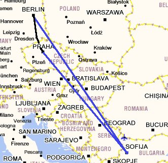
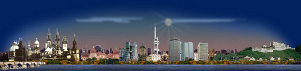
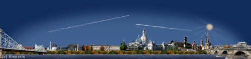
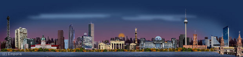

Влак: 706 km
Автомобил: 26819 km
Влак: 3972 km
Кораб: 928 km
Общо: 61134 km
Градове: 52
Държави: 20
Континенти: 2
Прага Дрезден Берлин Операцията
Съчетай полезното с приятното това беше целта на това пътуване от две части. На първо място трябваше да си направя неприятна но наложителна процедура целяща стабилизиране на зрението а на второ приятна и разтоварваща разходка в прекрасните столици Прага, Дрезден и Берлин. Операцията не е сложна но пък е доста болезнена, защото се отстранява механично епитела на роговицата, след което окото се третира с робофлавин и UV светлина. По това време в България не се правеше тази процедура и това наложи ходенето ми до Дрезден и то два пъти – по веднъж за всяко око. В клиниката Carl Gustav Carus бяха разработили тази техника за стабилизация на роговицата при кератоконус и може да се каже, че съм един от първите пациенти претърпял процедурата. Понастоящем около 50 000 подобни процедури се правят по света. Благодарен съм на Валери, който беше минал по този път преди година и ми даде кураж и безценни напътствия.

Полет София - Прага - София - Берлин
Прага

Започнах с Прага, нощна Прага. Бира за по - малко от Евро и тълпи от наквасени британци, а където ги има първите две има и руси момичета търсещи, не, всъщност предлагащи компания по улиците. Наелектризираща атмосфера, но тъй като бях сам, се прибрах в хотела, пих едно и се легнах.
Дневна Прага с нищо не е по – различна, пак тълпи и много бира, но този път компания им правят красивите кули цъфнали на всяка сграда в центъра на града. Разходката ми мина през Карловия мост и с интерес установих, че всеки продавач на сувенири там беше българин. Явно наши хора държаха този бизнес. Не бяха толкоз наши за да ми направят отстъпка в цената, но това е положението – българите се поддържаме в чужбина.

Виж Галерията от Прага
Дрезден

Пристигнах в Дрезден с влак, и се удивих от гарата. Страхотна е! Реставрирали са старата сграда и са добавили внушителен стъклен покрив над пероните. Чистота, удобство и спокойно придвижване. Браво на немците – издигнали са ЖП транспорта в култ, знаят че бъдещето е в него.
Дрезден е много интересен град, като столица на Саксонската държава е акумулирал огромно културно наследство. Уникална архитектура повлияна от Римската ера, това е с което ще го запомня.
Виж Галерията от Дрезден
Друга атракция са старите речни кораби по Елба. Заслужава си и разходката из аристократичните квартали с приказни къщи.
Аристократичните къщи от Дрезден
Берлин

Втората част на пътуването беше половин година по - късно. След полет София – Берлин кацнах в най – уредената столица на Европа. С S-Bhan стигнах до хостел Generator - огромно преустроено общежитие. Разходката из Берлин започна с Телевизионната кула, Berliner Dom, Brandenburg Gate и естествено Райхстага. След това невероятната Централна Гара и плажа на река Шпрее, а от там до Potsdamer Platz, където са скупчени новите модерни сгради – кулата на Deutsche Bahn и Sony Center. Реших да се кача на Телевизионната кула по тъмно и не сгреших гледката си струва, отидох отново и до Potsdamer Platz където небостъргачите осветяваха нощта.
Виж Галерията от Берлин